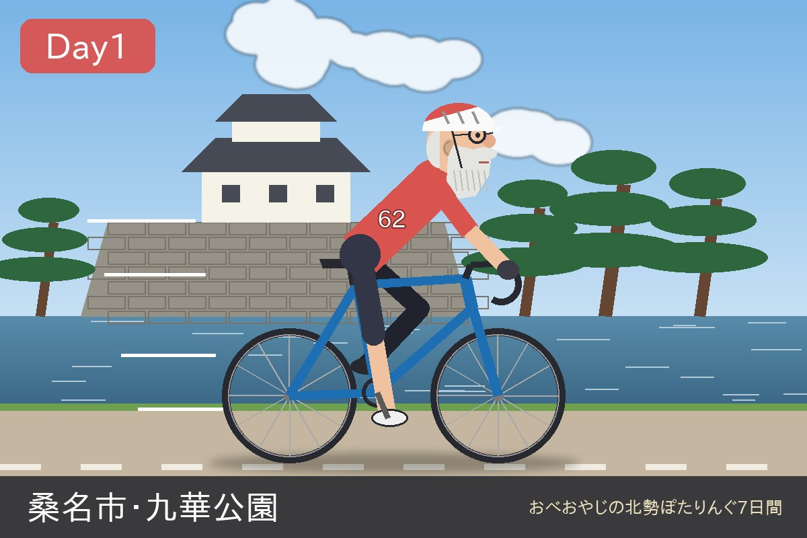

還暦を過ぎて2年。ヒゲに白いものがすっかり増えましたが、自転車熱だけは冷めません。今日から7日間、桑名・四日市・鈴鹿の公園をつないで走る「北勢ぽたりんぐ」を始めます。
初日は桑名城の跡に整備された九華公園から。お堀に囲まれた園内は、石垣や水辺を眺めながらのんびり回れます。春は桜、初夏はつつじ・花しょうぶの名所としても知られています。
園内は散歩の方が多いので、自転車は押して歩くのがマナー。外周の道路をゆっくり一周してから、揖斐川の堤防沿いへ足を伸ばすと、川風が気持ちいいコースになります。
若いころのように距離や速さは追いません。目標は「疲れる前に休む」。ベンチで水分をとって、ヒゲについた汗をぬぐって、また走る。このくらいがちょうどいいのです。
※公園内の自転車の乗り入れ・駐輪のルールや施設の情報は変わることがあります。お出かけ前に各市・公園の最新の公式案内を確認してください。
それではまた明日。安全運転で、ゆっくり行きましょう。
―― おべおやじ（62歳・ヒゲおやじ）
#サイクリング #桑名市 #九華公園 #シニアライフ #ポタリング